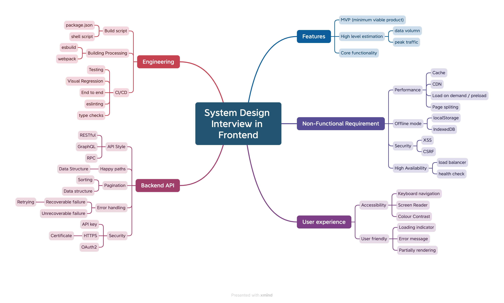
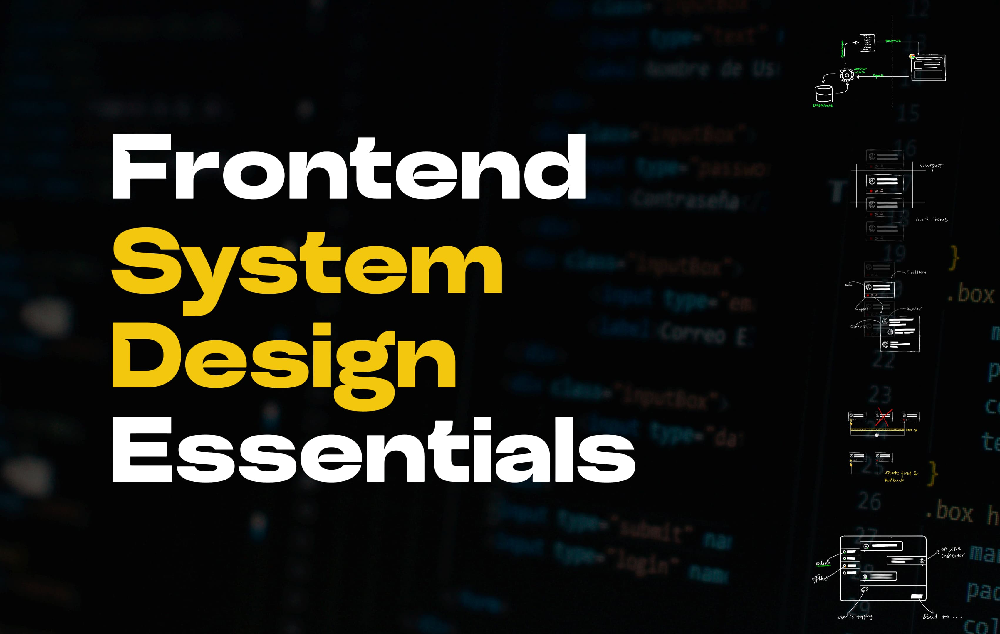

Image has no intrinsic size — browser reserves 0 height until the image loads, then content jumps.

System design is the process of defining the architecture, components, and data flow for a system to meet specified requirements. When the image above loads, everything below shifts down.

No reserved space, so every image that loads after first paint pushes content. CLS adds up.
Compare with the "after" page: same content; only width/height differ → zero shift.